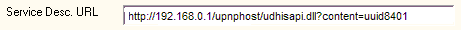
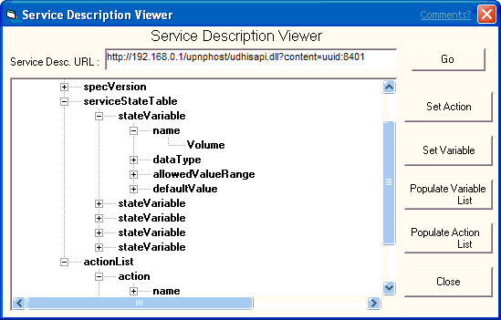
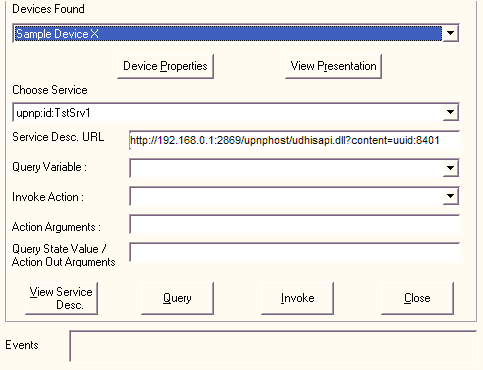

Once you have discovered devices, you can control them.
To view device properties
[!Note]
The View Presentation functionality is not available in the C++ sample code.
Â
To view a device's presentation page
[!Note]
The View Service Desc. functionality is not available in the C++ sample code.
Â
To view a service description
You can enter the URL to the service description in the Service Desc. URL field.

Click View Service Desc. The Service Description Viewer window is displayed. You can then browse the service description using the tree view. This functionality is not available in the C++ sample code.

There are five commands you can use in the Service Description Viewer window.
| Button | Action Performed |
|---|---|
| Go | Loads the file shown in the Service Desc. URL field. |
| Set Action | Select an action name in the service description tree and click Set Action. The action name is entered into the Invoke Action field of the main Generic UCP window. |
| Set Variable | Select a variable name in the service description tree and click Set Variable. The variable name is entered into the Query Variable field of the main Generic UCP window. |
| Populate Variable List | Loads all the service's variable names into the Query Variable list of the main Generic UCP window. |
| Populate Action List | Loads all the service's action names into the Invoke Action list of the main Generic UCP window. |
Â
To control a device
From the Devices Found list, select the device you want to control.
From the Choose Service list, select the service you want to invoke or state variable you want to query.

[!Note]
The contents of the Service List is based on the device selected in the Devices Found list.
Â
If you want to find out the value of a state variable for the selected service, enter the variable name in the Query Variable field for service. Click Query. The results are shown in the Query State Value/Action Out Arguments field.
If you want to invoke an action for a service, enter the action name in the Invoke Action field, and any arguments in the Action Arguments field. Click Invoke. The results are shown in the Query State Value/Action Out Arguments field, if any.
The return value, if any, is contained in the first out argument.
[!Note]
If there are multiple arguments for an action, separate them with spaces.
Â
View eventing information in the Events field for the selected service.
Â
Â